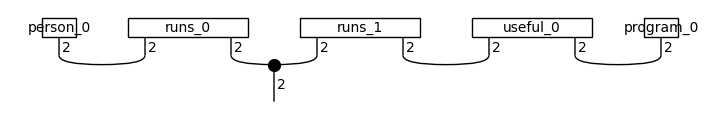

Classical pipeline¶
import os
os.environ["TOKENIZERS_PARALLELISM"] = "false"
import torch
BATCH_SIZE = 30
EPOCHS = 25
LEARNING_RATE = 3e-2
SEED = 0
Input data¶
def read_data(filename):
labels, sentences = [], []
with open(filename) as f:
for line in f:
t = float(line[0])
labels.append([t, 1-t])
sentences.append(line[1:].strip())
return labels, sentences
train_labels, train_data = read_data('datasets/mc_train_data.txt')
dev_labels, dev_data = read_data('datasets/mc_dev_data.txt')
test_labels, test_data = read_data('datasets/mc_test_data.txt')
TESTING = int(os.environ.get('TEST_NOTEBOOKS', '0'))
if TESTING:
train_labels, train_data = train_labels[:2], train_data[:2]
dev_labels, dev_data = dev_labels[:2], dev_data[:2]
test_labels, test_data = test_labels[:2], test_data[:2]
EPOCHS = 1
Create diagrams¶
from lambeq import BobcatParser
reader = BobcatParser(verbose='text')
train_diagrams = reader.sentences2diagrams(train_data)
dev_diagrams = reader.sentences2diagrams(dev_data)
test_diagrams = reader.sentences2diagrams(test_data)
Tagging sentences.
Parsing tagged sentences.
Turning parse trees to diagrams.
Tagging sentences.
Parsing tagged sentences.
Turning parse trees to diagrams.
Tagging sentences.
Parsing tagged sentences.
Turning parse trees to diagrams.
Create circuits¶
from lambeq.backend.tensor import Dim
from lambeq import AtomicType, SpiderAnsatz
ansatz = SpiderAnsatz({AtomicType.NOUN: Dim(2),
AtomicType.SENTENCE: Dim(2)})
train_circuits = [ansatz(diagram) for diagram in train_diagrams]
dev_circuits = [ansatz(diagram) for diagram in dev_diagrams]
test_circuits = [ansatz(diagram) for diagram in test_diagrams]
train_circuits[-1].draw(figsize=(7, 1))

Parameterise¶
from lambeq import PytorchModel
all_circuits = train_circuits + dev_circuits + test_circuits
model = PytorchModel.from_diagrams(all_circuits)
Define Evaluation Metric¶
sig = torch.sigmoid
def accuracy(y_hat, y):
return torch.sum(torch.eq(torch.round(sig(y_hat)), y))/len(y)/2 # half due to double-counting
Initialize Trainer¶
from lambeq import PytorchTrainer
trainer = PytorchTrainer(
model=model,
loss_function=torch.nn.BCEWithLogitsLoss(),
optimizer=torch.optim.AdamW, # type: ignore
learning_rate=LEARNING_RATE,
epochs=EPOCHS,
evaluate_functions={"acc": accuracy},
evaluate_on_train=True,
verbose='text',
seed=SEED)
from lambeq import Dataset
train_dataset = Dataset(
train_circuits,
train_labels,
batch_size=BATCH_SIZE)
dev_dataset = Dataset(dev_circuits, dev_labels)
Train¶
trainer.fit(train_dataset, dev_dataset, log_interval=5)
Epoch 5: train/loss: 0.6386 valid/loss: 0.7189 train/time: 0.68s valid/time: 1.47s train/acc: 0.5786 valid/acc: 0.5333
Epoch 10: train/loss: 0.5280 valid/loss: 0.6392 train/time: 0.49s valid/time: 0.15s train/acc: 0.5857 valid/acc: 0.5833
Epoch 15: train/loss: 0.4138 valid/loss: 0.4924 train/time: 0.38s valid/time: 0.27s train/acc: 0.7500 valid/acc: 0.7500
Epoch 20: train/loss: 0.1306 valid/loss: 0.2794 train/time: 0.60s valid/time: 0.14s train/acc: 0.9857 valid/acc: 0.9500
Epoch 25: train/loss: 0.0120 valid/loss: 0.0595 train/time: 0.37s valid/time: 0.21s train/acc: 0.9929 valid/acc: 0.9833
Training completed!
train/time: 2.52s train/time_per_epoch: 0.10s train/time_per_step: 0.03s valid/time: 2.23s valid/time_per_eval: 0.09s
Show results¶
import matplotlib.pyplot as plt
import numpy as np
fig1, ((ax_tl, ax_tr), (ax_bl, ax_br)) = plt.subplots(2, 2, sharey='row', figsize=(10, 6))
ax_tl.set_title('Training set')
ax_tr.set_title('Development set')
ax_bl.set_xlabel('Epochs')
ax_br.set_xlabel('Epochs')
ax_bl.set_ylabel('Accuracy')
ax_tl.set_ylabel('Loss')
colours = iter(plt.rcParams['axes.prop_cycle'].by_key()['color'])
range_ = np.arange(1, trainer.epochs + 1)
ax_tl.plot(range_, trainer.train_epoch_costs, color=next(colours))
ax_bl.plot(range_, trainer.train_eval_results['acc'], color=next(colours))
ax_tr.plot(range_, trainer.val_costs, color=next(colours))
ax_br.plot(range_, trainer.val_eval_results['acc'], color=next(colours))
# print test accuracy
test_acc = accuracy(model.forward(test_circuits), torch.tensor(test_labels))
print('Test accuracy:', test_acc.item())
Test accuracy: 0.9833333492279053